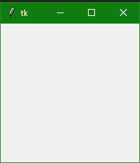

Tkinter 模块介绍
原文：https://www.studytonight.com/tkinter/introduction-to-python-tkinter-module
在本教程中，我们将介绍 Tkinter、它的先决条件、GUI 编程的不同方法、如何安装 Tkinter 以及它的工作原理。
Tkinter 是一个 python 中的标准库，用于为桌面应用创建图形用户界面(GUI) 。借助 Tkinter 开发桌面应用并不是一件难事。
我们将使用的主图形用户界面工具包是Tk，这是 Python 的默认图形用户界面库。我们将从其名为Tkit(Tk 接口的缩写)的 Python 接口访问Tk。
Tkinter 的先决条件
在学习 Tkinter 之前，你要有Python 的基础知识。您可以使用我们的完整 Python 教程学习 Python。
Python 中的图形用户界面编程
用 Python 开发基于图形用户界面的程序有很多方法。下面给出了这些不同的方法:
tkinter:
在 Python 中， Tkinter 是一个标准的 GUI (图形用户界面)包。Tkinter 是 Python 的默认 GUI 模块，也是 Python 中 GUI 编程最常用的方式。注意 Tkinter 是一组包装器，将
Tk小部件实现为 Python 类。wxppython:
这基本上是一个开源的、跨平台的 GUI 工具包，用 C++ 编写。也是 Tkinter 的替代品。
曲面:T1
JPython 是一个面向 Java 的 Python 平台，它为本地机器提供了对 Java 类库的 Python 脚本无缝访问。
我们将介绍用 Tkinter 进行图形用户界面编程。
什么是 Tkinter？
Python 中的 Tkinter 有助于以最少的麻烦创建图形用户界面应用。在各种图形用户界面框架中，Tkinter 是唯一内置于 Python 标准库的框架。
有利于 Tkinter 的一个重要特性是它是跨平台，所以同样的代码可以轻松在 Windows 、 macOS 和 Linux 上运行。
Tkinter 是轻量级模块。
使用起来很简单。
**## 什么是 Tcl、Tk 和 Tkinter？
让我们通过更多地讨论 Tkinter 模块的起源来尝试了解它。
如上所述，Tkinter 是 Python 的默认 GUI 库，它只不过是 Tk 工具包之上的一个包装器模块。
Tkinter 基于 Tk 工具包，最初是为工具命令语言 (Tcl)设计的。由于 Tk 非常受欢迎，因此它被移植到了各种各样的其他脚本语言中，包括 Perl (Perl/Tk) 、 Ruby (Ruby/Tk) 和Python(Tkit)。
GUI 开发可移植性和 Tk 的灵活性使其成为设计和实现各种商业级 GUI 应用的合适工具。**
Python 配合 Tkinter 为我们提供了一种更快更高效的方式来构建有用的应用，如果你必须借助原生 OS 系统库直接用 C/C++编程，这将花费很多时间。
一旦我们启动并运行了 Tkinter，我们将使用称为小部件的基本构建块来创建各种桌面应用。
安装 Tkinter
有可能，Tkinter 可能已经和 Python 一起安装在您的系统上了。但并不总是如此。所以让我们首先检查它是否可用。
如果系统上没有安装 Python-先安装 Python 3.8 ，然后检查 Tkinter。
您可以通过尝试导入 Tkinter 模块来确定您的 Python 解释器是否可以使用 Tkinter-如果可以使用 Tkinter，则不会出现错误，如以下代码所示:
import tkinter
没有爆炸，所以我们知道我们有 Tkinter 可用。如果您看到任何错误，如找不到模块等，那么您的 Python 解释器没有在启用 Tkit 的情况下编译，模块导入失败，您可能需要重新编译您的 Python 解释器才能访问 Tkit。
将Tk添加到您的应用中
使用 Python 中的 Tkinter 设置 GUI 应用的基本步骤如下:
首先导入 Tkinter 模块。
第二步是创建一个顶层窗口对象，它包含了你的整个 GUI 应用。
然后在第三步中，您需要设置您所有的图形用户界面组件及其功能。
然后需要将这些 GUI 组件连接到底层应用代码。
然后只需使用
mainloop()进入主事件循环
以上步骤现在听起来可能有些胡言乱语。但是只要把它们都读完，我们将在继续学习本教程时解释所有内容。
第一个 Tkinter 示例
如前所述，在图形用户界面编程中，所有主要小部件都只构建在顶层窗口对象上。
顶层窗口对象由Tkinter中的Tk类创建。
让我们创建一个顶级窗口:
import tkinter as tk
win = tk.Tk()
###you can add widgets here
win.mainloop()

以上使用的方法:
使用图形用户界面创建 Python 应用时，使用了两种主要方法。你必须记住它们，这些在下面给出:
- Tk(screenName=None，baseName=None，class name =‘tk '，use uk = 1)
该方法主要用于创建主窗口。您也可以根据需要更改窗口的名称，只需将类名更改为所需的名称即可。
用于创建应用主窗口的代码是，我们也在上面的示例中使用了它:
win = tkinter.Tk() ## where win indicates name of the main window object
2。mainloop()功能
此方法用于启动应用。mainloop()功能是一个无限循环用来运行应用，它会等待一个事件发生和处理事件只要窗口没有关闭。
总结:
至此我们已经完成了对 Tkinter 的介绍，我们已经安装了 Tkinter 模块，甚至知道了什么是 Tkinter 中的 Windows 和 Widgets。我们还创建了我们的第一个 Tkinter GUI 应用并运行它。在下一个教程中，我们将了解更多关于 Tkinter 小部件的信息。